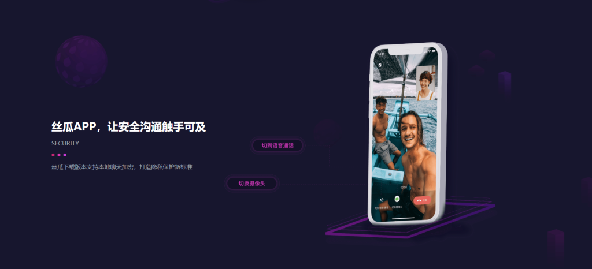

如何下载丝瓜聊天？
要下载丝瓜聊天，您可以前往应用商店（如苹果App Store或安卓的应用市场）搜索“丝瓜聊天”，然后点击下载并安装。如果找不到，可以访问丝瓜聊天的官方网站或通过第三方应用下载网站获取安装包。请确保从可靠的渠道下载，确保安全性。

下载丝瓜聊天的官方渠道
在App Store上下载丝瓜聊天
-
打开App Store：首先，在您的苹果设备上打开App Store应用。确保设备已连接到互联网，并且已登录Apple ID账户。若尚未登录，您需要先进行登录才能下载任何应用。
-
搜索丝瓜聊天：在App Store的搜索栏中输入“丝瓜聊天”，点击搜索按钮。系统会显示相关的搜索结果，确保点击的是由官方发布的丝瓜聊天应用。
-
点击下载并安装：找到丝瓜聊天应用后，点击右侧的“获取”按钮。如果您的设备设置了Face ID或Touch ID，可能需要通过面容识别或指纹验证完成下载。下载后，应用会自动安装，您可以通过主屏幕找到并打开丝瓜聊天。
在Google Play上下载丝瓜聊天
-
打开Google Play商店：在安卓设备上，首先打开Google Play商店，确保设备已连接到Wi-Fi或移动数据网络，并且已登录Google账户。如果尚未登录Google账户，请先完成登录。
-
搜索丝瓜聊天：在Google Play商店的搜索框中，输入“丝瓜聊天”并点击搜索按钮。搜索结果会显示官方发布的丝瓜聊天应用，确保点击正确的应用，以避免下载假冒软件。
-
点击安装并运行：找到丝瓜聊天应用后，点击“安装”按钮开始下载。下载完成后，您可以直接点击“打开”按钮启动应用，或从设备主屏幕找到并点击丝瓜聊天图标进行使用。
安卓用户获取丝瓜聊天
通过安卓应用市场下载
-
打开安卓应用市场：首先，确保您的安卓设备连接到互联网，然后打开设备上的应用市场（如Google Play商店）。如果您在中国大陆，可能需要使用本地的安卓市场，如华为应用市场、小米应用商店等。
-
搜索丝瓜聊天：在应用市场的搜索框中输入“丝瓜聊天”，点击搜索按钮。系统将显示相关的应用列表，确保选择正确的丝瓜聊天应用，避免下载仿冒版本。
-
点击下载并安装：找到丝瓜聊天应用后，点击“安装”按钮。根据您的网络环境，下载速度可能会有所不同。下载完成后，应用将自动安装到设备中，您可以从主屏幕或应用菜单中找到丝瓜聊天并点击启动。
使用APK安装包下载
-
从官网或可信平台下载APK文件：如果您无法通过应用市场直接下载丝瓜聊天，可以选择从丝瓜聊天的官方网站或其他可信的第三方平台获取APK安装包。在官网下载时，请确认平台的安全性，避免下载到恶意软件。
-
启用安装未知来源应用：在下载APK文件之前，您需要在安卓设备的设置中启用“安装未知来源的应用”选项。这通常可以在“设置”->“安全”或“应用管理”中找到。开启此功能后，您将能安装从Play商店以外的来源下载的APK文件。
-
安装并运行APK文件：下载APK文件后，点击文件进行安装。系统会弹出权限请求提示，您需要确认授权，允许应用访问所需权限。安装完成后，您可以在设备上找到丝瓜聊天的图标，点击启动应用，开始使用。

苹果用户获取丝瓜聊天
在App Store中搜索并下载
-
打开App Store：首先，确保您的iPhone或iPad已连接到互联网，并登录您的Apple ID账户。如果未登录，您需要先进行登录，才能下载任何应用。
-
搜索丝瓜聊天：在App Store的首页，点击底部的“搜索”图标，然后在搜索框中输入“丝瓜聊天”。点击搜索按钮，系统将显示相关的应用程序，确保您选择的是官方发布的丝瓜聊天应用。
-
点击下载并安装：找到丝瓜聊天应用后，点击“获取”按钮。根据您的设备设置，您可能需要输入Apple ID的密码，或者使用Face ID/Touch ID验证身份。下载完成后，应用将自动安装到您的设备上，您可以通过主屏幕找到丝瓜聊天图标并点击打开。
手动设置地区下载丝瓜聊天
-
检查地区限制：如果您所在的地区无法直接在App Store中找到丝瓜聊天应用，您可以通过更改App Store的地区设置来解决。首先，确保您的设备已连接到互联网，并且处于登录状态。
-
修改Apple ID的地区设置：进入“设置”->“iTunes与App Store”->点击您的Apple ID->选择“查看Apple ID”->进入“国家/地区”选项，点击“更改国家或地区”。选择一个可以正常下载丝瓜聊天的国家或地区，例如美国、香港等。
-
重新搜索并下载：更改地区后，返回App Store搜索框中重新搜索“丝瓜聊天”。您应该能够看到并下载应用。下载完成后，您可以再次返回原本的地区设置，不影响其他操作。

丝瓜聊天官方下载步骤解析
从丝瓜官方网站直接下载
-
访问官方网站：首先，打开浏览器并访问丝瓜聊天的官方网站。确保您访问的是官方站点，避免通过第三方网站下载，以确保下载文件的真实性与安全性。官方网站通常会提供最新版本的下载链接。
-
选择合适的版本：根据您的设备系统（如Windows、macOS、安卓或iOS），在网站上选择对应的下载链接。对于安卓设备，您通常需要下载APK文件，而对于iOS和其他设备，可能会提供直接通过App Store或其他渠道的下载方式。
-
点击下载按钮：在官网上找到合适的下载链接后，点击下载按钮。对于PC端，下载的通常是安装程序文件（如.exe、.dmg等）。对于移动端，您可能会被引导到App Store或Google Play页面进行下载。
确认下载文件的安全性
-
检查下载来源：下载前，确认所下载的文件来源是否可靠。通过丝瓜聊天官方网站进行下载是最安全的方式，避免通过不明第三方平台下载。对于安卓设备，建议通过官方网站或信任的应用商店下载APK文件，避免恶意软件的干扰。
-
扫描下载文件：在下载完成后，尤其是APK文件或安装包，建议使用防病毒软件或手机安全应用扫描文件。这样可以提前发现并阻止潜在的恶意软件，确保设备的安全。
-
检查文件完整性：对于一些敏感应用或大型应用，官方有时会提供文件的校验码（如MD5、SHA256等）。您可以通过这些校验码来验证下载的文件是否完整且未被篡改。如果文件校验码与官网提供的不符，说明下载的文件可能被修改，应立即停止安装并重新下载。

丝瓜聊天更新与升级
如何检查丝瓜聊天是否有新版本
-
通过App Store或Google Play检查：如果您使用的是iOS设备，可以打开App Store并进入“更新”页面查看是否有丝瓜聊天的新版本可用。如果是安卓设备，打开Google Play商店，进入“我的应用”部分，您可以看到所有已安装应用的更新状态，若丝瓜聊天有新版本，您将看到更新提示。
-
开启自动更新功能：为了避免错过任何更新，您可以在设备的应用商店中开启自动更新功能，这样当丝瓜聊天有新版本发布时，应用会自动更新至最新版本，无需手动检查。此功能适用于iOS和安卓设备。
-
访问官方网站或社交平台：如果您不习惯在应用商店中查看，丝瓜聊天的官方网站和社交平台（如微博、微信公众号等）也会发布有关新版本的更新通知。定期访问这些平台可以帮助您保持对最新版本的关注。
升级时需要注意的事项
-
备份聊天记录：在进行升级之前，最好备份您的聊天记录。虽然大多数应用更新不会影响现有数据，但为了防止意外情况发生，定期备份聊天记录是一个明智的做法。丝瓜聊天可能提供云备份或本地备份选项，您可以选择适合自己的方式进行备份。
-
检查设备兼容性：在进行升级之前，请确保您的设备支持新版本的丝瓜聊天。有时新版本的更新可能需要更高的操作系统版本，因此，请确保您的设备操作系统是最新的，或者符合新版本的系统要求。
-
保持足够存储空间：升级过程中，确保您的设备有足够的存储空间来下载和安装新版本。如果存储空间不足，更新可能会失败或者无法正常进行。因此，定期清理设备上的不必要文件，保持足够的存储空间是十分必要的。